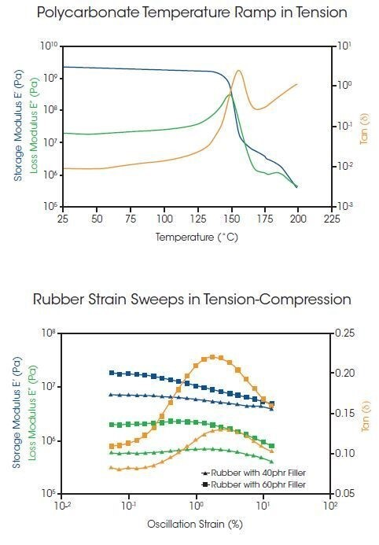
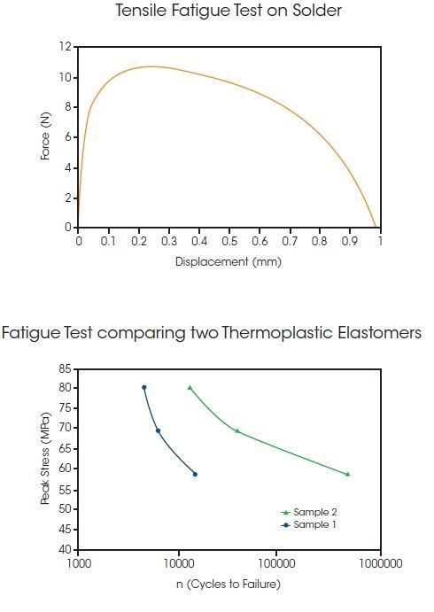

The DMA 3200 features patented ElectroForce linear motor technology enabling a single instrument to deliver unequalled performance and data accuracy. This unique motor technology combines powerful rare-earth magnets with a frictionless flexural suspension for the most precise force and displacement control over a wide range of frequencies and amplitudes. The DMA 3200 motor delivers a force output of up to 500 N and controlled displacements ranging from 1 micron to 13 mm. Testing can be conducted in both static and dynamic modes.
In addition, the frictionless, moving-magnet design eliminates failure points that exist in other motor designs, such as moving wires and bearing degradation. This ensures the most durable and reliable performance; proven over billions of cycles through decades of maintenance-free use in ElectroForce fatigue test instruments. It is the only motor in the industry backed by a ten-year warranty.
This efficient, quiet, and lubrication-free motor technology allows the DMA 3200 to be used virtually anywhere; from lab to production floor, or from the cleanroom to office space.
Dynamic Mechanical Analysis (DMA)
DMA is a technique that applies a sinusoidal deformation, stress or strain, to a sample and measures the viscoelastic response. The frequency and magnitude of the deformation can be held constant or varied (swept) during an experiment. The material response to the deformation can be monitored as a function of temperature, frequency, or time. DMA is used to determine variety of mechanical properties, i.e., complex modulus, E*, storage and loss moduli (E’, & E”) and damping (tan δ) of viscoelastic materials, detect molecular motions, and develop structure-property relationships.

High Force Dynamic Mechanical Analysis, DMA
The high-force capability of the DMA 3200 extends experimental loading regimes and enables testing of larger samples or actual components. Examples of high force DMA capabilities are shown in the figures to the right.
The top figure shows a temperature ramp on a bar of Polycarbonate at a heating rate of 3°C/min and strain of 0.4%. The dimensions of the sample are 1.6 mm thick, 12.8 mm wide, and 19 mm long. These results demonstrate the capabilities of the DMA 3200 design in several ways. First, the high-force, high-stiffness design of the DMA 3200 enables such a thick sample to be tested in the glassy region, or below the Tg, of the polymer in tension mode. A more traditional lower force DMA instrument design would be both force and stiffness limited. Such results would have to be obtained in a bending configuration vs. tension. Second, the friction-free design which provides excellent low force sensitivity enables characterizing the glass transition through over three decades of change in modulus.
The bottom figure shows strain sweeps on two cylindrical rubber samples, tested using compression clamps, at a temperature of 30°C and frequency of 10 Hz. The sample dimensions were a diameter of 10 mm and thickness of 20 mm. These two rubber samples have different amounts of filler content, specifically 40 phr and 60 phr, where phr is a batch unit standing for parts per hundred of rubber. It can be seen that higher filler content results in a higher modulus as well as a more strain-dependent modulus. During this test, forces required to apply 20% strain, which is equivalent to 5 mm, are approaching 60 N. These results highlight both the high force and exceptional displacement control of the DMA 3200.
Fatigue and Quasi-static Testing
Most materials, components, and devices are exposed to repeated loading conditions during their use and this loading causes fatigue of the material. This fatigue can lead to dramatic changes in material behavior, which can impact overall performance, or it can result in complete and catastrophic failure. Mechanical fatigue testing provides insights on how and when materials, components, or devices fail when subjected to oscillating forces, or stresses. These insights into material behavior are used to ensure reliable product performance and prove out lifetime claims.
Monotonic testing, also known as tensile testing, is also useful for evaluating strength and deformation response. In this case, properties are measured during a single load-to-failure test.
Various material, component or device characteristics can be measured with the DMA 3200, supporting many types of dynamic or static strength studies.

Enabling Fatigue and Quasi-static Testing
The flexibility, power, and durability of the DMA 3200 enables a variety of tests in addition to DMA. Its wide range of speed and force make it useful for both fatigue and quasi-static testing. Examples of these capabilities are shown in the figures to the right.
The top figure shows a single pull-to-failure test, aka tensile test, on a small bar of solder. The displacement ramp was controlled at 1 micron per minute and temperature was constant at 25°C. The dimensions of the sample are 0.5 mm diameter and 2 mm long. This test requires slow and precise control of displacement over a very long time, in this case 14 hours. The sample demonstrates the classic linear region in the beginning of the test in the left of the plot and a very long ductile failure over the middle and right of the plot. This test demonstrates flexibility of the ElectroForce linear motor. Even though it has very high dynamic capabilities it can also be used for precise and slow testing as well.
The bottom figure shows the results of a fatigue study on thermoplastic elastomers. This curve is often called an “S-N Curve” for Strength versus Number of cycles. It is a common plot to illustrate and characterize the cyclic-loading lifetime of materials or components as a function of the loading level. It can be seen that as the stress is decreased the sample required more cycles to failure. This test demonstrates how the DMA 3200 can be used for a high cycle test, leveraging its high acceleration and durability attributes.
Example Measurments:
- Modulus of Elasticity (E)
- Stiffness (K)
- Yield Strength
- Tensile Strength
- Elongation at Break
- Fatigue Strength
Example Strength Studies
- Accelerated Life Testing
- SN Curve Determination
- Mechanical Aging
- Creep and Recovery
- Stress Relaxation
- Tensile testing